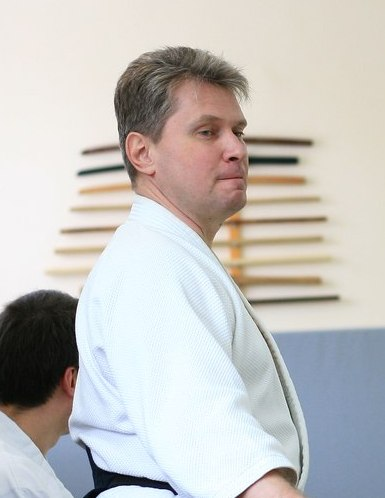
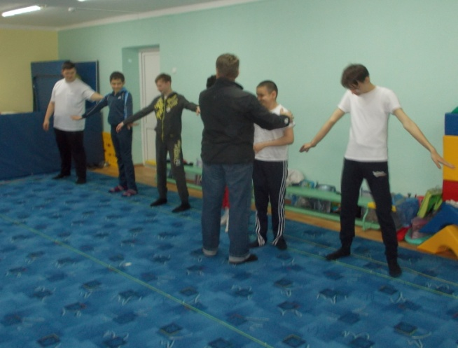
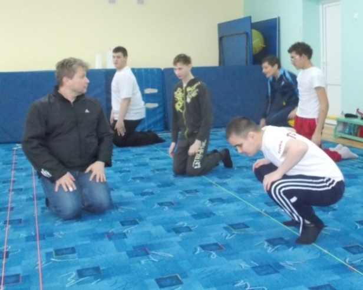
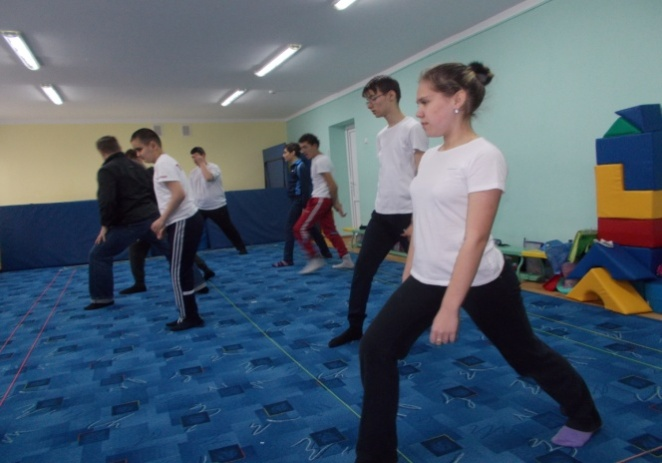
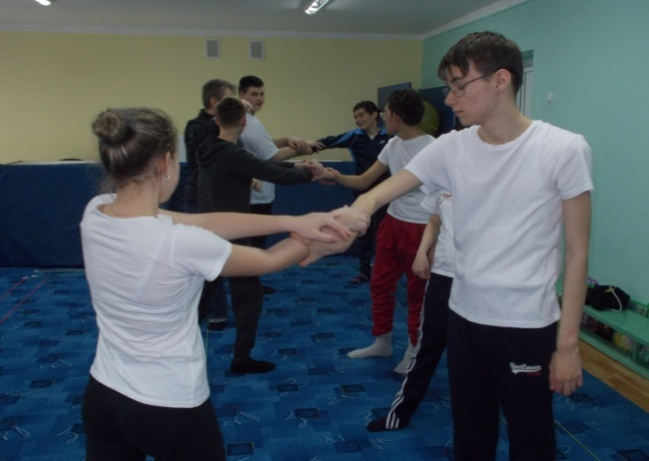
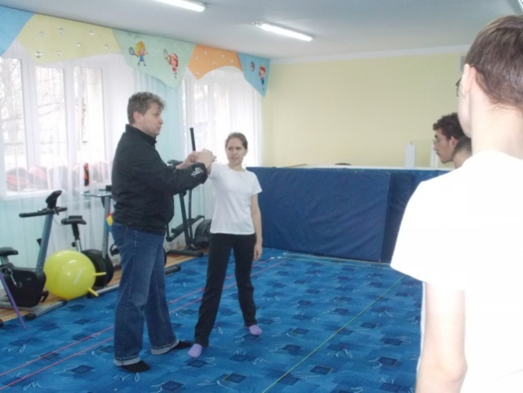
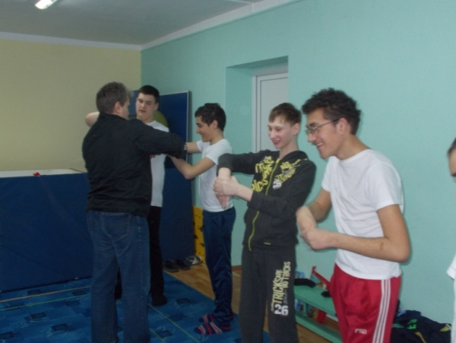

Использование айкидо в физкультурно-оздоровительной работе
с детьми,имеющими нарушения зрения
03.05.2017
|
|
Весной 2016 года Федерация айкидо «Айкикай» Саратовской области
инициировала в ГБОУ СО «Школа-интернат АОП №3 г. Саратова» проект
"айкидо для детей с нарушениями зрения". Администрация школы-интерната
в лице директора Шустера Н. Н, педагоги и родители обучающихся
поддержали идею укрепления здоровья детей с ОВЗ и увеличения их
двигательной активности посредством нетрадиционных физических методик.
Техническим исполнителем стал президент федерации айкидо Петров С.А.,
инструктор с 25-летним стажем преподавания айкидо, магистрант кафедры
дефектологии СГУ.
|
|
Специализация школы-интерната АОП № 3 г. Саратова - обучение
детей с нарушением зрения. Двигательная активность детей с
нарушениями зрения снижена из-за медицинских ограничений по
физической нагрузке. Более 90% учащихся школы относятся к
специальной медицинской группе занятий по физической культуре.
Для них дефицит движения многократно возрастает, так как
эти дети отличаются меньшей подвижностью, нечеткостью
координации движений, недостаточной ловкостью и точностью
выполнения движений. При этом темп выполнения движений
снижен. Поэтому развивать таких детей физически очень важно.
|
|
Чем больше дети приобретут различных двигательных навыков,
тем выше будет уровень их физической подготовленности. У
них будут развиваться сила, быстрота, гибкость, выносливость,
координация движений. Они будут лучше ориентироваться в
пространстве. Все эти физические качества необходимы в жизни
любому человеку, а незрячему особенно.
|
|
Занятия по айкидо прекрасно подходят для решения таких задач.
Айкидо - это современное боевое искусство, технически
состоящее из болевых воздействий на суставы и различных
методов выведения и сохранения баланса. Однако
неадаптированный вариант занятий, практикуемый в подавляющем
большинстве случаев, для детей с ОВЗ не подходит. Полный
цикл тренировок по айкидо для детей с нарушениями зрения
недопустим. Для них при занятиях физической культурой
приоритетным является сохранение и улучшение состояния зрения.
Айкидо как несоревновательная дисциплина допускает широкое
изменение методологии преподавания с учетом возможностей
конкретного занимающегося.
|
Для определения границ изменений методологии преподавания
были изучены научные публикации по тематике воздействия
физических нагрузок на человека при различных заболеваниях
органов зрения. Проведены консультации со специалистами:
-
Барановым А.В., к.м.н., заведующим детским
офтальмологическим отделением больницы им. Раухфуса,
г.Санкт-Петербург,
-
Петровой Е.А., врачом-судмедэкспертом, Саратовского
бюро судебной медицинской экспертизы,
-
Мясниковой Л.В., кандидатом педагогических наук,
доцентом кафедры коррекционной педагогики СГУ,
-
Кристианом Тисье, 8 дан айкидо, г. Париж,
-
Паскалем Гийманом, 6 дан айкидо, г. Марсель.
|
В результате проведения консультаций и собеседований,
комплексного изучения специальной литературы была построена
следующая концепция тренировочного процесса:
-
Невысокая степень физической нагрузки с контролем числа
сердечны сокращений не более 120 ударов в минуту.
-
Исключение или изменение технических элементов,
приводящих к линейным и угловым ускорениям головы.
|
|
При планировании работы также учитывалось, чтобы во время
занятий физические нагрузки были соразмерны тем нагрузкам,
которые дети испытывают в повседневной жизни.
|
|
В сентябре 2016 года на базе кабинета ЛФК школы-интерната
начались тренировки. Тренировочные занятия проводились
инструктором преподавания айкидо ПетровымС.А.
|
|

|
|
Тренировочный процесс проходил под наблюдением преподавателей
физической культуры школы Машенцевой Т.В. и Шахминой Е.Н.
Влияние тренировок на состояние здоровья контролировали
врач-педиатр школы и офтальмолог.
|
|
Дети, занимающиеся в группе, ознакомились с методами
безопасных падений, различными перемещениями, используемыми
в айкидо, получили представление о способах освобождения от
захватов и методов перемещения в критической ситуации. Они
смогли улучшить свое физическое состояние. Немаловажным явился
и тот факт, что у ребят повысилась мотивация к изучению
физики, биологии, других предметов, которые активно и
наглядно используются для освоения техник айкидо.
|
|
Такой подход к организации тренировок позволяет тщательно
контролировать физическое состояние занимающихся и не допускать
превышения предельно установленных нагрузок, а также
осуществлять тренировку в комфортных условиях, к которым дети
привыкли, занимаясь на уроках физической культуры и ЛФК.
|
|
Проводимый в процессе тренировок мониторинг позволяет
проанализировать результаты работы и использовать данный
материал для планирования дальнейшей коррекционно-развивающей
работы в образовательном учреждении.
|
|

|
|

|
|

|
|

|
|

|
|

|
|
Результатом обработки полученных данных стала статья
Петрова С.А., Машенцевой Т.В. и Шахминой Е.Н. «Айкидо для
детей с ОВЗ (на примере работы с детьми с патологией зрения)»
|
|
Петров С.А.,президент федерации айкидо, инструктор
преподавания айкидо:
|
|
Занятия айкидо меняют человека. По мере занятий появляются
навыки сохранения равновесия, улучшается пространственная
ориентация и ощущения собственного тела. А простые ,но не
менее эффективные навыки самообороны позволяют чувствовать
себя комфортно и в обычной жизни, и в экстремальных ситуациях.
|
|
Изучение сложно-координационных действий устанавливает
новые нейронные связи и улучшают работу мозга. Все эти
положительные моменты закономерно проявились и при проведении
занятий в школе. Особенно заметна положительная динамика
у максимально мотивированных ребят. Ксения П., Даша С.,
Олег Д., Валерия Б. из 9 «А» класса и Ермек С. из 7 «В»
класса уверенно выполняют технические элементы, двигаются
более координировано, лучше контролируют окружающее пространство.
|
|
Машенцева Т.В., учитель физической культуры высшей
квалификационной категории:
|
|
Специфические техники айкидо вызвали большой интерес у
детей. Систематические занятия показали положительную
динамику в освоении детьми основных движений и в развитии
физических качеств. Упражнения активизировали
мышечно-суставную чувствительность. А это является
преобладающим в управлении движениями.
|
|
Воспитанники школы-интерната получают большое удовольствие
от тренировок. В процессе занятий айкидо они получают
положительные эмоции, закрепляют отработку движений на
координацию, равновесие, ориентировку в пространстве. Тренировки
способствуют снижению психоэмоционального напряжения, его
оздоровлению и поддержанию общей работоспособности, повышают
мотивацию к учебе. А ещё учат быть в гармонии со своим
внутренним миром.
|
Материал подготовлен
методическим объединением
учителей физической культуры
|